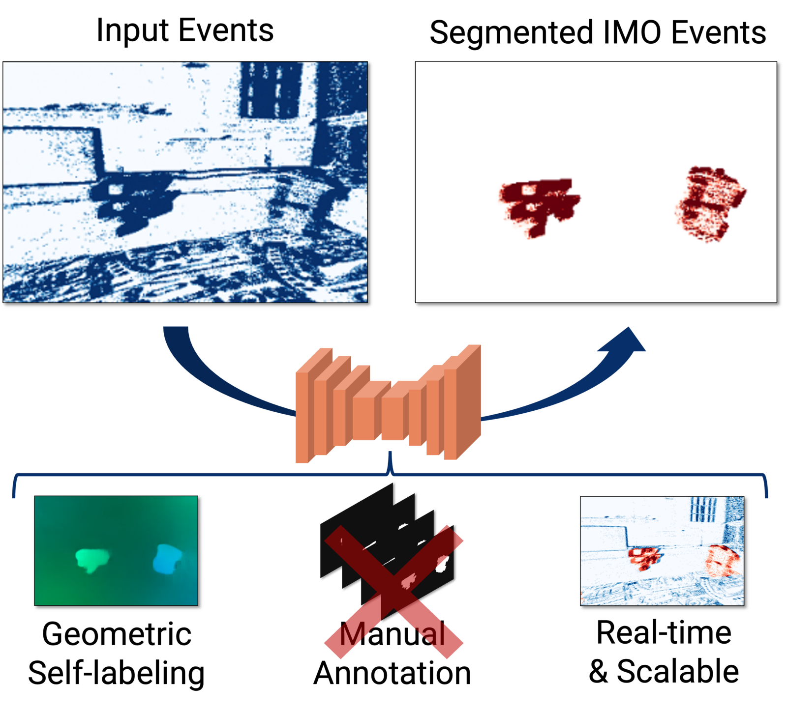
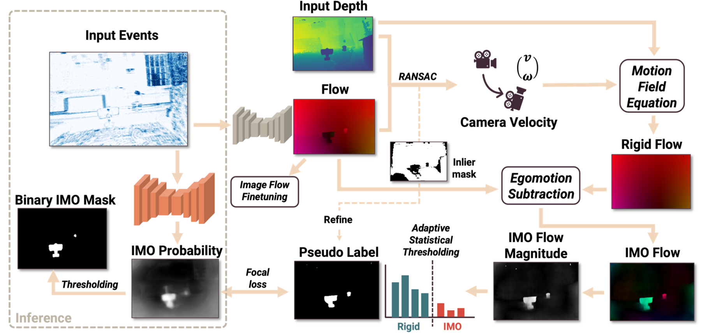
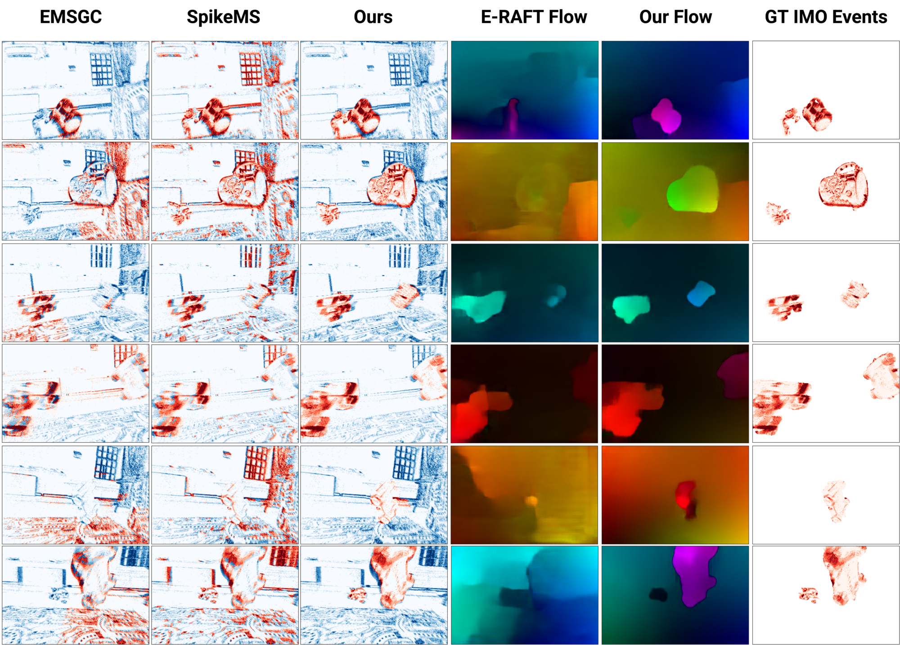

Un-EVIMO: Unsupervised Event-based Independent Motion Segmentation
- Ziyun Wang¹
- Jinyuan Guo¹
- Kostas Daniilidis¹𝄒²

TL;DR: The first event-based framework that segments independently moving objects with no motion labels, by generating pseudo-labels from geometric constraints.
Abstract
Event cameras are a novel type of biologically inspired vision sensor known for their high temporal resolution, high dynamic range, and low power consumption. Because of these properties, they are well-suited for processing fast motions that require rapid reactions. Although event cameras have recently shown competitive performance in unsupervised optical flow estimation, performance in detecting independently moving objects (IMOs) is lacking behind, although event-based methods would be suited for this task based on their low latency and HDR properties.
Previous approaches to event-based IMO segmentation have been heavily dependent on labeled data. However, biological vision systems have developed the ability to avoid moving objects through daily tasks without being given explicit labels. In this work, we propose the first event framework that generates IMO pseudo-labels using geometric constraints. Due to its unsupervised nature, our method can handle an arbitrary number of not predetermined objects and is easily scalable to datasets where expensive IMO labels are not readily available. We evaluate our approach on the EVIMO dataset and show that it performs competitively with supervised methods, both quantitatively and qualitatively.
Pipeline
Left dotted box: we train a network to directly predict IMO masks from events. Rest of the figure: we use a geometric self-labeling method to generate binary IMO pseudo-labels that supervise the IMO segmentation network. Our framework uses off-the-shelf optical flow (fine-tuned on image-based flow) and input depth. The camera motion fitted from flow and depth through RANSAC is used to compute rigid flow from the camera only. Pseudo-labels are generated through adaptive thresholding based on the magnitude of the estimated IMO motion field.

Qualitative results
Qualitatively, our results are very similar in quality compared with supervised CNN methods, largely outperform optimization-based methods, and even outperform supervised SNNs. SpikeMS tends to sparsify the events and keep edges. EMSGC needs extensive tuning to get reasonable results, and it still misclassifies IMOs as rigid areas. With these noisy predictions across the image from SpikeMS and EMSGC, IMOs cannot be easily detected and handled, while our network produces spatially consistent segmentations.

Motion segmentation in action
We compute the motion segmentation results on the Wall test sequence in the EV-IMO dataset. The red events belong to segmented IMOs and the blue events are the background events. Running inference with Un-EVIMO is simple and requires no parameter tuning: while training needs geometry-based labels, only events are used for prediction. We take the best of both worlds of deep learning and optimization — 1) simple and robust inference with a single feed-forward pass, and 2) scalable training with no expensive annotations required.
Acknowledgements
The authors gratefully acknowledge the support of NSF FRR 2220868, NSF IIS-RI 2212433, NSF TRIPODS
1934960 and ONR N00014-22-1-2677.
BibTeX
@inproceedings{wang2024unevimo,
title={{Un-EVIMO: Unsupervised Event-based Independent Motion Segmentation}},
author={Wang, Ziyun and Guo, Jinyuan and Daniilidis, Kostas},
booktitle={European Conference on Computer Vision (ECCV)},
pages={228--245},
year={2024}
}